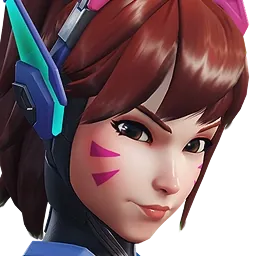

TANK · BUSAN, SOUTH KOREA
D.Va
Hana Song
Former professional gamer turned MEKA pilot, D.Va protects her home by taking the fight directly to the enemy. Her mech can absorb incoming fire, boost into combat, and self-destruct when the moment is right.
Signature abilities
- Defense Matrix
- Boosters
- Micro Missiles
- Self-Destruct
